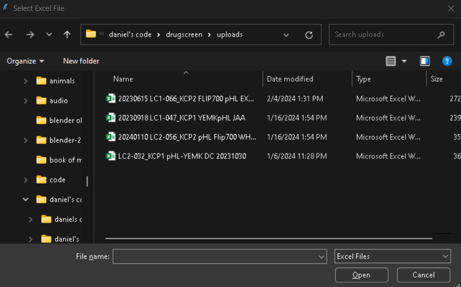
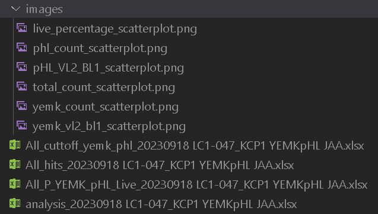
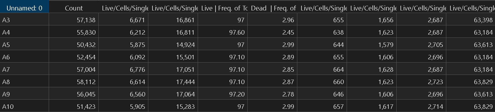
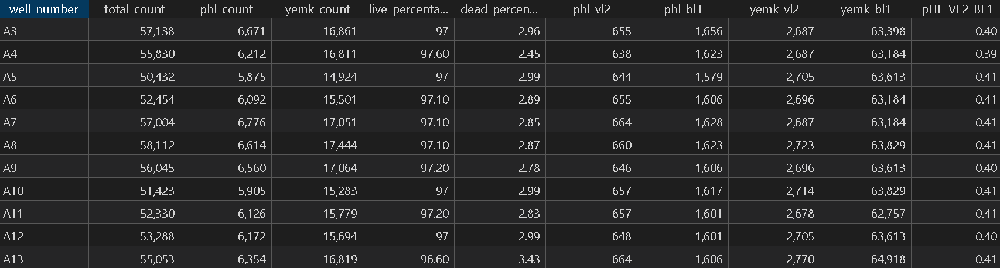
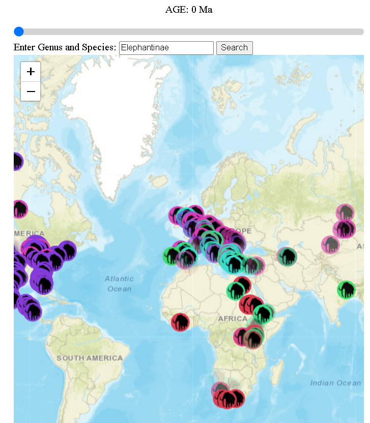
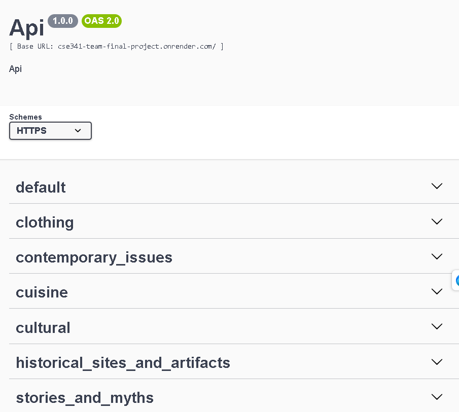

Portfolio Project
Drug Screening Analysis Program
Co-authored on a program for analyzing drug screenings, saving time and reducing errors. GitHub: Drug Screening GitHub
   
Paleobiological GIS Program
Built a GIS website displaying fossil sites across geologic time. GitHub: Paleobiological GIS GitHub
Motor Vehicle Website
Created a business website displaying car data retrieved from an SQL database. GitHub: Motor Vehicle GitHub

Cultural Data API Web Service
Developed an API to retrieve and update data about cultures around the world. GitHub: Cultural Data API GitHub
3D Animation Advertisement and Product Development
Designed animated advertisements and products for Crafted Core's business.